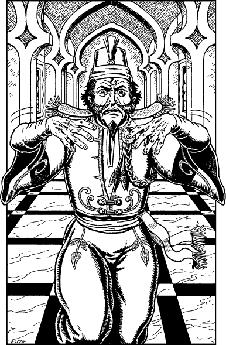

282
Following directions given by the men in your charge, you make your way through the quiet streets of Ghol-Tabras until you arrive at the grand double doors of its Coppersmiths’ Hall. You push open one of these mighty portals and enter an imposing chamber that is decorated with the portraits of wealthy Shadakine merchants and past coppermasters. The warden of the hall comes hurrying towards you from the door to an antechamber. He is grumbling and waving his hands frantically as if he is trying to shoo away a cloud of invisible insects. It is clear from his sour expression that he has an intense dislike of the Suhnese.
‘Out! Out! Leave here at once!’ he blusters. You are about to be ejected from the hall when suddenly a guildsman intervenes. He orders the warden to stop shouting and calm himself down before his blood boils over. Seething with fury, the warden bites his lower lip as he tries with difficulty to obey this man’s command.

‘My name is Noliq,’ says the guildsman. ‘How may I be of service?’
You tell the man that you wish to sell some copper ingots. He smiles and says that he may be able to help you. The warden warns him that to do so after sunset is illegal, but the guildsman dismisses his comment with a disparaging flick of his hand.
‘Come to my chambers and we’ll discuss this matter further,’ he says, smiling. You motion to the crew to follow you but the man raises his hand once more, this time in protest. ‘I will discuss the matter only with you,’ he says. And then with a disdainful tone in his voice he adds, ‘These men will have to leave the hall and wait for you outside in the street.’
If you wish to agree to his conditions, turn to 18.
If you choose not to part company with the crew, turn instead to 190.